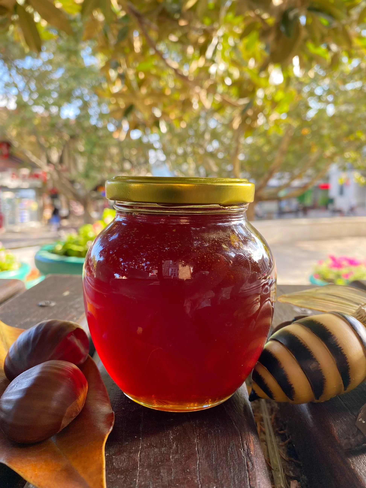
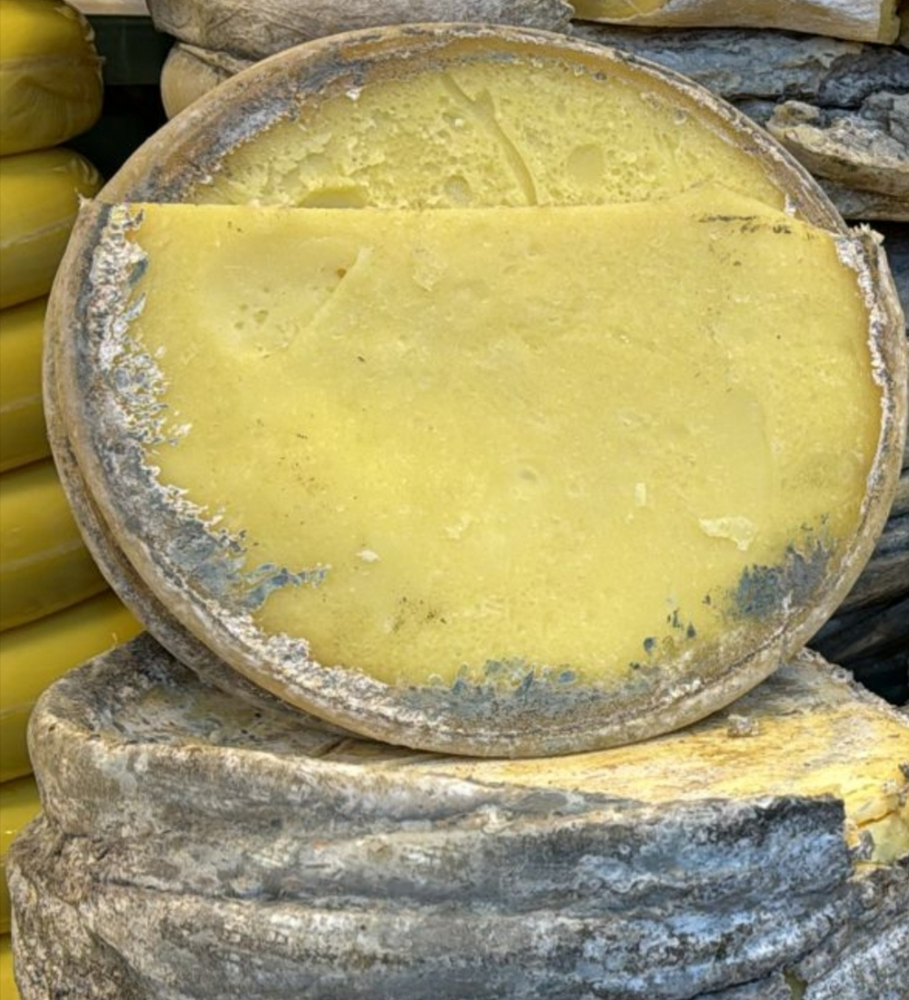
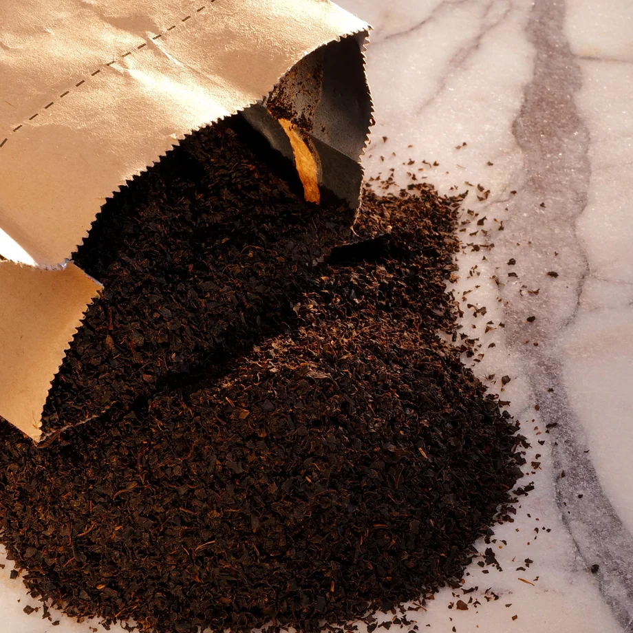
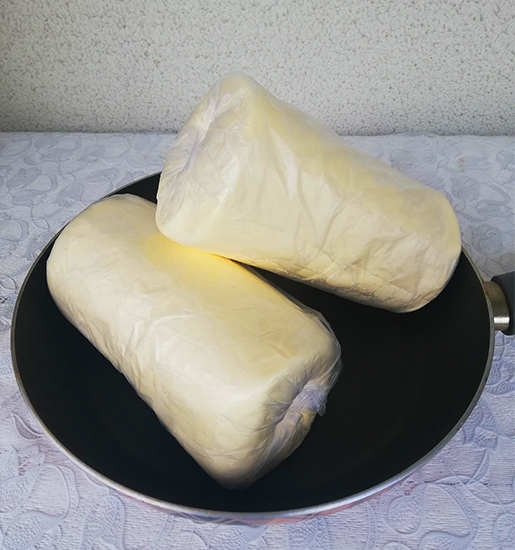

Artvin Yöresel Ürünleri

Artvin Çiçek Balı(500gr)
Yaylalarda doğal olarak üretilen katkısız çiçek balı. Tamamen doğal ve filtresizdir.
₺1.500
Kaçkar Yayla Peyniri(1kg)
İnek sütünden yapılan, yoğun aromalı geleneksel yayla peyniri.
₺500
Maçahel Doğal Çayı(1kg)
Artvin ormanlarında yetişen özel el yapımı siyah çay.
₺480
Yayla Tereyağı(1kg)
Geleneksel yöntemlerle üretilmiş katkısız doğal tereyağı.
₺800